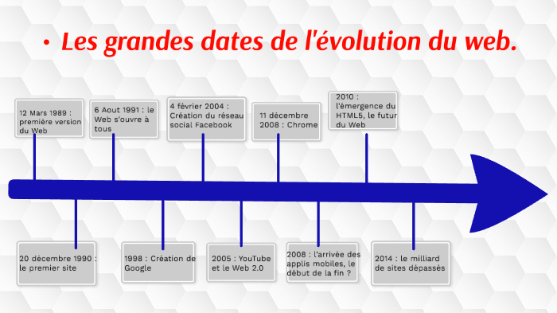

-Le Web est né en 1989 grâce à Tim Berners-Lee, un chercheur du CERN, qui a créé un système permettant de partager facilement des informations entre ordinateurs connectés à Internet, un réseau apparu dès les années 1960 avec ARPANET. Il devient accessible au public en 1991, mais c’est surtout en 1993 que le Web commence à se populariser avec le navigateur NCSA Mosaic, qui rend la navigation plus simple et visuelle, puisqu'il existait seulement 623 sites web.
-En 1995, le Web connaît une véritable explosion avec l’arrivée de grandes entreprises comme Amazon et eBay,marquant le début du commerce en ligne.
-en 1996, le nombre de sites web augmente fortement, les moteurs de recherche se développent et Internet devient progressivement accessible au grand public. Depuis, le Web n’a cessé d’évoluer, passant de pages statiques à des plateformes interactives, jusqu’à devenir aujourd’hui un outil essentiel dans la communication, l’information et la vie quotidienne.
Voila donc une frise chronologique resumant l'histoire de notre theme:
